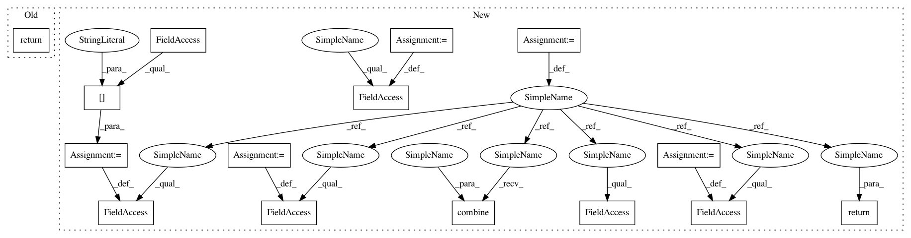

2be89c1cfd109ab6edb5be38710e999df52c6f7e,qiskit/aqua/algorithms/amplitude_estimators/iqae.py,IterativeAmplitudeEstimation,_run,#IterativeAmplitudeEstimation#,282
Before Change
"ratios": ratios,
}
return self._ret
After Change
ae_result = AmplitudeEstimationAlgorithmResult()
ae_result.value = self._ret["value"]
ae_result.estimation = self._ret["estimation"]
ae_result.num_oracle_queries = self._ret["num_oracle_queries"]
ae_result.confidence_interval = self._ret["confidence_interval"]
result = IterativeAmplitudeEstimationResult()
result.combine(ae_result)
result.value_confidence_interval = self._ret["value_confidence_interval"]
result.alpha = self._ret["alpha"]
result.actual_epsilon = self._ret["actual_epsilon"]
result.a_intervals = self._ret["a_intervals"]
result.theta_intervals = self._ret["theta_intervals"]
result.powers = self._ret["powers"]
result.ratios = self._ret["ratios"]
return result
class IterativeAmplitudeEstimationResult(AmplitudeEstimationAlgorithmResult):
IterativeAmplitudeEstimation Result.
In pattern: SUPERPATTERN
Frequency: 3
Non-data size: 15
Instances
Project Name: Qiskit/qiskit-aqua
Commit Name: 2be89c1cfd109ab6edb5be38710e999df52c6f7e
Time: 2020-09-10
Author: Manoel.Marques@ibm.com
File Name: qiskit/aqua/algorithms/amplitude_estimators/iqae.py
Class Name: IterativeAmplitudeEstimation
Method Name: _run
Project Name: Qiskit/qiskit-aqua
Commit Name: 4073c892cb618efd8cb49803461f054975b813c0
Time: 2020-03-05
Author: woodsp@us.ibm.com
File Name: qiskit/aqua/algorithms/minimum_eigen_solvers/vqe.py
Class Name: VQE
Method Name: _run
Project Name: Qiskit/qiskit-aqua
Commit Name: 2be89c1cfd109ab6edb5be38710e999df52c6f7e
Time: 2020-09-10
Author: Manoel.Marques@ibm.com
File Name: qiskit/aqua/algorithms/amplitude_estimators/mlae.py
Class Name: MaximumLikelihoodAmplitudeEstimation
Method Name: _run
Project Name: Qiskit/qiskit-aqua
Commit Name: 2be89c1cfd109ab6edb5be38710e999df52c6f7e
Time: 2020-09-10
Author: Manoel.Marques@ibm.com
File Name: qiskit/aqua/algorithms/amplitude_estimators/iqae.py
Class Name: IterativeAmplitudeEstimation
Method Name: _run